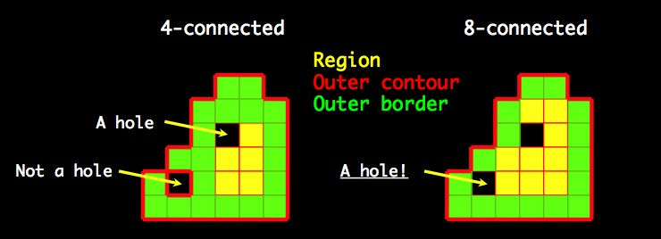

|
|
Home · Pages · Index · Overviews |
Connectivity Module ReferenceTraversals of n-dimensional arrays and general flood fill operations. More... #include <connectivity.h> Descriptive Types
RoutinesN-Dimensional Grid Support
Flood Fill Routines
Detailed DescriptionN-Dimensional GridsWhile Mylib provides a library of routines that operate upon arrays, there will inevitably be times when one needs to implement their own special functions over arrays and may indeed want them to work generally in n-dimensions as is true for all the routines in Mylib. To make this easier, the Connectivity module has routines that support a small resource pool of grids each identified by an integer id declared with the descriptive type name Grid_Id. One can request a grid that is setup for traversing a particular array or slice (i.e. APart) by calling Setup_Grid. One can then access the following information about the lattice of the APart in question with respect to 2n- or (3n-1)-connectivity:
Note carefully that the last three primitives all return a vector with exactly N = Grid_Size(id,iscon2n) elements, and that the neighbors of a voxel in the array's lattice occur in the same order in all three vectors. This order is exactly lexicographical order of the conceptual displacement vector, e.g. (-1,-1,-1), (-1,-1,1), (-1,1,-1) ... (1,1,1) for a 3D array under 2n connectivity. When you are done with a grid, it is very important to release it back to the resource pool so another process can use it by calling Release_Grid (more on this below). As an example, the routine below counts the number of locally maximal voxels in an integer array A with respect to 2n-connectivity if iscon2n is true, and (3n-1)-connectivity, otherwise.
1. Size_Type Count_Maxima(Integer_Array *A, int iscon2n)
2. { Grid_Id g = Setup_Grid(A,"Count_Maxima");
3. Size_Type N = Grid_Size(g,iscon2n);
4. Offs_Type *ngh = Grid_Neighbors(g,iscon2n);
5. int *val = AUINT32(A);
6. Size_Type M;
7. { Indx_Type p;
8. int k;
9. M = 0;
10. for (p = 0; p < A->size; p++)
11. { for (k = 0; k < N; k++)
12. if (val[p+ngh[k]] > val[p]) // There is a bug here, so read on please !!!
13. break;
14. M += (k >= N);
}
}
15. Release_Grid(g);
16. return (M);
}
The code above is actually not correct. The bug is that voxels on the boundary of the array do not have the full complement of neighbors and hence it is an error to offset to such a non-existent neighbor when on a boundary voxel. To this end, a grid further provides the routine Boundary_Pixels that for a given voxel p returns a boolean vector, in, of length N for which in[k] is true if and only if p+ngh[k] is in the array or slice. The routine Boundary_Pixels can be further optimized for the important 2D and 3D cases, so the module provides specialized versions Boundary_Pixels_2d and Boundary_Pixels_3d. The grid routines are used throughout Mylib to realize all the routines that generally work on n-dimensional arrays and slices. In fact, if our example routine Count_Maxima were part of the Mylib library, its implementation, including optimization for the 2D and 3D cases would look something like this:
1. Size_Type Count_Maxima(Integer_Array *A, int iscon2n)
2. { Grid_Id g = Setup_Grid(A,"Count_Maxima");
3. Size_Type N = Grid_Size(g,iscon2n);
4. Offs_Type *ngh = Grid_Neighbors(g,iscon2n);
5. int *val = AUINT32(A);
6. Size_Type M;
7. boolean *(*bnd)(Grid_Id,Indx_Type,int);
8. if (A->ndims == 2)
9. bnd = Boundary_Pixels_2d;
10. else if (A->ndims == 3)
11. bnd = Boundary_Pixels_3d;
12. else
13. bnd = Boundary_Pixels;
14. { Indx_Type p;
15. int k;
16. M = 0;
17. for (p = 0; p < A->size; p++)
18. { boolean *in = bnd(g,p,iscon2n);
19. for (k = 0; k < N; k++)
20. if (in[k] && val[p+ngh[k]] > val[p])
21. break;
22. M += (k >= N);
}
}
23. Release_Grid(g);
24. return (M);
}
While the code above is correct, it is in absolute terms quite a bit less efficient then the first (incorrect) version because Boundary_Pixels is called on every voxel, and in[k] has to be checked for each potential neighbor p+ngh[k]. Asymptotically, the code is no worse than the earlier version because Boundary_Pixels is O(N) and one will spend that much time in lines 19-21. But in absolute terms, when this code was timed on a Macbook Pro there was a 5-fold increase in the time taken on a large 2D array, because line 20 involves fewer machine instructions than those taken to compute in[k] for each k. So for those that want the ultimate in efficiency, one can replace lines 14-22 with the code below, which while quite a bit more involved, effectively returns the performance to the case where "no" boundary checks are required. The key to understanding the code fragment below, is to realize that for each run of w = A->dims[0] consecutive elements in the array, only the lowest dimension is changing. For all but the first and the last voxel in each such run, the result of calling Boundary_Pixels will be the same, and hence need not be recomputed. The three cases are effected by a small for-loop over a variable c (line 10) where the first voxel case is handled when c = 0, the middle w-2 voxels are handled when c = 1, and the last voxel is handled when c = 2. In order not to have to check in for each neighbor in line 20, the code fills in a copy of ngh in the array alt with the modification that it sets the offset to 0 if the offset were to take one outside the array, i.e. in[k] is not true. Rather than allocate alt, the code takes the dirty hack of coercing the distance array of the grid g knowing that (a) the size of a double is not less than the size of an Offs_Type, and (b) the values setup in this array by Setup_Grid will never be needed by this code. Note further, that the code seeks to save every micro-second by placing val[p] in a variable x in line 18, and by jumping around the increment of M in line 22 if the voxel is found not to be maximal in line 20.
1. { Dimn_Type w;
2. Offs_Type *alt;
3. Indx_Type p, n, len[3];
4. int k, c;
5. alt = (Offs_Type *) Grid_Distances(g,iscon2n);
6. len[0] = len[2] = 1;
7. len[1] = A->dims[0]-2;
8. M = 0;
9. for (p = 0; p < A->size; )
10. for (c = 0; c < 3; c++)
11. { boolean *in = bnd(g,p,iscon2n);
12. for (k = 0; k < N; k++)
13. if (in[k])
14. alt[k] = ngh[k];
15. else
16. alt[k] = 0;
17. for (n = p+len[c]; p < n; p++)
18. { uint32 x = val[p];
19. for (k = 0; k < N; k++)
20. if (val[p+alt[k]] > x)
21. goto done;
22. M += 1;
23. done: ;
}
}
}
In a single thread application, typically a single grid is in use. The reason for a pool of grids (8 by default) is to support multi-threaded applications. When one calls Setup_Grid, if there is an available grid in the pool, then the grid is marked as in use, setup, and its id returned. Otherwise, the routine waits until a grid becomes available by virture of another thread releasing a grid by calling Release_Grid. Thus it is very important to remember to release a grid when one no longer needs it, as a failure to do so will result in a deadlocked program. Reset_Grids waits until all grids are not in use, and then frees all the storage associated with the grids in the resource pool returning it to its initial state. General Flood-Fill RoutinesA flood fill is a simple linear time method for finding and operating upon a region of connected voxels that satisfy some common property such as having a value greater than some threshold. This module contains three general routines that perform (a) a flood fill starting at a given seed voxel (Flood_Object), (b) a flood fill that finds all the regions satisfying a given property (Flood_All), and (c) a flood fill that starting at a voxel on the outer contour of a region, will traverse the outer surface of the region (Flood_Surface). The routines are general in that the caller defines the criterion for being in the flood fill region and the action to be performed on the voxels in the region via handler routines that they supply. Flood_Object(A,share,iscon2n,seed,argt,test,arge,eval,argc,check,arga,act) does a flood fill, with respect to 2n-connectivity if iscon2n it true, (3n-1)-connectivity otherwise, of voxels in array or slice A starting from voxel seed to all voxels p for which test(p,argt) is true. During this flood fill it calls eval(p,arge) once on each voxel in the flood fill region. Then it calls check(n,argc) where n is the number of voxels in the flood-fill region, and if this returns true, then in a second pass over the flood-fill region, act(p,arga) is called on each voxel in the region. If A is a Slice, then seed must be inside the slice and the flood fill is restricted to the region delimited by the slice. The routine test is called on a voxel at most once, so the predicate it evaluates must be invariant to the order in which it is called on voxels in A. If an 'arg' parameter is not needed by its associated handler than it may be NULL, and any handler, if it is not needed, can also be NULL. Note that the test handler is always needed, as it defines the region, and if check is NULL, then the second pass takes place. Furthermore, the second pass does not involve calling test, so the handler act can change the values in an underlying array or relevant variables as it pleases without affecting the set of voxels upon which it will be called. The parameter share will be explained later, for most applications it can be 0. As an example, the routine Flatten_Big_Regions below replaces all voxels in the 2n-connected region about seed that are not less than t, with the mean of the region, provided the region contains at least s voxels:
static int *Val;
static int Thresh;
static int Size;
static int Mean;
boolean test(Indx_Type p, void *arg)
{ return (Val[p] >= Thresh); }
void eval(Indx_Type p, void *arg)
{ Mean += Val[p]; }
boolean check(Size_Type n, void *arg)
{ Mean = (Mean + (Mean >> 1)) / n;
return (n >= Size);
}
void act(Index_Type p, void *arg)
{ Val[p] = Mean; }
void Flatten_Big_Regions(Integer_Array *A, Indx_Type seed, int t, int s)
{ Val = AINT32(A);
Thresh = t;
Size = s;
Mean = 0;
Flood_Object(A,0,1,seed,NULL,test,NULL,eval,NULL,check,NULL,act);
}
Observe that the handlers test, eval, check, and act need information about A, t, and s, as well as needing to communicate information to each other (i.e. Mean). In this version of the example, this is accomplished by setting up global variables (i.e. Val, Thresh, Size, and Mean) before the call to Flood_Object, completely by-passing the need for the void *arg parameters that are thus all set to NULL. While this code is perfectly correct, it is not re-entrant. For situations where one doesn't care about being re-entrant, the style above is the simplist way to realize the handlers. However, all Mylib routines are re-entrant and it seemed a good idea to allow users to write re-entrant routines using the flood fill primitives. So each handler is called with a void * pointer that can point at any values the handler needs in order to perform its function. This pointer is passed to the flood fill routine as the parameter preceding the handler in the argument list of the call. As an example, Zero_Big_Regions is recoded below, but this time in a re-entrant fashion, by using the void * payload pointers. To keep it simple, we have only one payload structure, MyArg, that all four handlers share:
typedef struct
{ int *val;
int thresh;
int size;
int mean;
} MyArg;
#define M(a) ((MyArg *) (a))
boolean test(Indx_Type p, void *arg)
{ return (M(arg)->val[p] >= M(arg)->thresh) }
void eval(Indx_Type p, void *arg)
{ M(arg)->mean += M(arg)->val[p]; }
boolean check(Size_Type n, void *arg)
{ int m = M(arg)->mean;
M(arg)->mean = (m + (m >> 1))/ n;
return (n >= M(arg)->size);
}
void act(Index_Type p, void *arg)
{ M(arg)->val[p] = M(arg)->mean; }
void Flatten_Big_Regions(Integer_Array *A, Indx_Type seed, int t, int s)
{ MyArg arg;
arg.val = AINT32(A);
arg.thresh = t;
arg.size = s;
arg.mean = 0;
Flood_Object(A,0,1,seed,&arg,test,&arg,eval,&arg,check,&arg,act);
}
Flood_All(A,share,iscon2n,argt,test,arge,eval,argc,check,arga,act) scans the array or slice A, executing flood fills with respect to the connectivity indicated by iscon2n whenever a voxel, not yet traversed by the scan or a previous flood fill, is encountered for which test(p,argt) is true. The operation of each flood fill and the role of each handler is exactly as for Flood_Object, this routine does a flood-fill of every iscon2n connnected region of voxels for which test is true. Flood_Surface is a rather unusual flood fill that traverses the (n-1)-dimensional surface or outer countour of the iscon2n connected region of voxels that include seed and for which test(p,argt) is true. It must be given a seed that is leftmost in that a step in the negative x-direction takes one to a voxel that is not in the region and that is not in a hole of the region (i.e. an area surrounded by an iscon2n connected subset of voxels from the region). Most Mylib routines that return seeds or structures that hold seeds, refer to leftmost seeds. For example, Level_Set_LeftMost returns a leftmost seed for a level set, and the seed-field of a P_Vertex in a Partition is always leftmost. It is recommended that an implementation always retain a leftmost voxel if one intends to use such a voxel as a seed from which one can then recapture the desired object with some form of flood fill. The voxel with the smallest index in a given region is always leftmost and Find_Leftmost_Seed finds that voxel given any seed voxel in the region and a test-handler. The handlers for Flood_Surface play the same roles as those for Flood_Object, with some subtle changes as follows. The handler evaluate is called on each voxel on the outer border of the flood-fill region. The outer border is the iscon2n-connected subset of voxels of the region that are ~ iscon2n-connected to a voxel exterior to the region and not in a hole. The handler check(s,a,d) is called with three size parameters. s is the number of voxels in the outer border, and a, is the surface area of the region, which is the number of faces in the outer countour of the region. An x-face is a face of the outer contour oriented in the x-direction. The third parameter, d, is the number of voxels in the outer border that have 2 x-faces. The reason for this somewhat obscure parameter, is because Region objects are built using this routine and their internal encoding of a region requires knowing this number (see the page for Regions if you are curious to know more). The handler act(p,x) is called on every outer border voxel where x is the number of x-faces of the voxel (0, 1, or 2). The figure below illustrates in 2D the concepts of hole, outer contour, and outer border described above, specifically depicting the difference in these entities depending on the setting of iscon2n. In this example the region is both 4-connected and 8-connected, so that one can see the difference in the concepts depending on whether the region was found with a 4-connected flood fill or an 8-connected flood fill. In the 4-connected case, Flood_Surface will call check(20,28,1), and in the 8-connect case it will call check(16,24,0).  Flood-Fill And Threads: The Mysterious Parameter shareAll of the flood fill routines require a mark array in order to efficiently perform their traversals. In threaded applications several threads performing flood fills on disjoint Slices of the same array A, can use a single mark array that has the same size as A. Alternatively, each thread may use a private mark array that is the size of the slice. The input parameter share determines this subtle behavior of the flood fill routines. If share is 0, then the called flood fill routine uses a private mark vector whose size is that of the array or slice source passed to it (i.e. AForm_Size(source). If share > 0, then the called routine uses a shared mark vector whose size is that of the underlying array of source (i.e. AForm_Array(source)->size), where the mark vector is shared with any other thread whose APart refers to the same underlying array and for which the value of share is the same. Thus by using different values of share, one can create different sharing pools as per one's whim. Note very carefully, that it is the user's responsibility to make sure that any slices that share a mark array are indeed disjoint, failure to do so leads to unpredictable results. In addition to a mark array, a flood fill routine also need a queue. A pool of these queues and mark arrays is maintained globally. A flood fill routine, Flood, when called requests a pair of working structures (according to the setting of share). If one is available then Flood is allocated the resource pair, otherwise Flood waits until it can be allocated the resource pair. Once it has been allocated a resource pair, Flood then performs its operation, and when it is done it releases the resource back to the pool. Ideally, the number of resource pairs available equals the number of cores on your machine (e.g. 8). This number is equal to the constant NUM_THREADS defined in the Mylib Core module. Further note that this resource pool consumes memory and if one uses it with large arrays or lots of threads the memory allocated for the resource pool can get large over time as it is not implicitly freed when a resource is released. To release all the memory held by the flood fill resource pool, call Reset_Flood. Note carefully that this routine will not return until all threads actively using flood fill resources release them. Descriptive Types Documentation
The integer id of a grid data structure that is from a finite resource pool of such structures. Allocation of a grid to a process is by Setup_Grid which returns the id of the grid, and the release of a grid is by Release_Grid. Inbetween, the grid is refered to by its id. Routine Documentation
Request the allocation of a grid, waiting if necessary until one can be allocated, and once recieved, set it up for traversals of the lattice of the array or slice a. The routine can exit if there is insufficient memory, in which case, the source of the error is given by the string routine.
Return the number of neighbors to a point in the lattice of the array that grid id has been setup for.
Return a pointer to a vector of length Grid_Size(id,iscon2n) that gives the offsets to each neighbor of a voxel in the array that grid id has been setup for. The values in the vector are read-only, and the space for the vector belongs to the grid.
Return a pointer to a vector, say dist, of length Grid_Size(id,iscon2n) that gives the Euclidean distance to each neighbor of a voxel in the array that grid id has been set up for, i.e. dist[i] is the distance between a voxel and one offset from it by ngh[i] where ngh = Grid_Neighbors(id,iscon2n). The values in the vector are read-only, and the space for the vector belongs to the grid.
Return a pointer to a vector, say bck, of length Grid_Size(id,iscon2n) that gives the index into ngh = Grid_Neighbors(id,iscon2n) of the direction opposite to ngh[i]. That is, ngh[bck[i]] = -ngh[i]. The values in bck are read-only, and the space for it belongs to the grid.
For the given voxel p, return a pointer to a boolean vector, say in, of length Grid_Size(id,iscon2n) for which in[k] is true if and only if p+ngh[k] is in the array or slice that grid id has been set up for.
A version of Boundary_Pixels optimized for 2D.
A version of Boundary_Pixels optimized for 3D.
Return grid id to the grid resource pool so that it can be used by the next process requiring a grid.
Free all memory blocks associated with the grids in the grid resource pool. The routine waits until all grids have been released before returning.
Perform a flood fill, with respect to 2n-connectivity if iscon2n is true, 3n-1-connected otherwise, of voxels in array or slice source starting from voxel seed to all voxels p for which test(p,argt) is true. During this flood fill eval(p,arge) is called once on each voxel in the flood fill region. Once the flood fill completes, check(n,argc) is called where n is the number of voxels in the flood-fill region, and if this returns true, then in a second pass over the flood-fill region, act(p,arga) is called on each voxel in the region. If source is a Slice, then seed must be inside the slice and the flood fill is restricted to the region delimited by the slice. The routine test is called on a voxel at most once, so the predicate it evaluates must be invariant to the order in which it is called on voxels in A. If an 'arg' parameter is not needed by its associated handler than it may be NULL, and any handler, if it is not needed, can also be NULL. If check is NULL, then the second pass takes place. NB: The second pass does not involve calling test, so the handler act can change the values in an underlying array or relevant variables as it pleases without affecting the set of voxels upon which it will be called. The parameter share controls the sharing of mark array amongst threads working on disjoint slices of a common image. Setting it to zero is always safe. For a complete explanation see the subsection above.
Perform a flood fill on every iscon2n connected region of voxels for which test is true. The handlers eval, check, and act have the same roles as for Flood_Object. The parameter share controls the sharing of mark array amongst threads working on disjoint slices of a common image. Setting it to zero is always safe. For a complete explanation see the subsection above.
Flood fill the (n-1)-dimensional outer border of the iscon2n connected region of voxels that include seed and for which test(p,argt) is true. The outer border is the subset of voxels of the region that have at least one outer contour face, i.e. a face that is part of the outer contour of the region. It must be given a seed that is leftmost in that a step in the negative x-direction takes one to a voxel that is not in the region and that is not in a hole of the region (i.e. an area surrounded by an iscon2n connected subset of voxels from the region). The handlers for Flood_Surface play the same roles as those for Flood_Object, with some subtle changes as follows.
The parameter share controls the sharing of mark array amongst threads working on disjoint slices of a common image. Setting it to zero is always safe. For a complete explanation see the subsection above.
Return the voxel with the smallest index in the region delineated by the parameters seed, iscon2n, and text. This index is guaranteed to be leftmost in that a step to the left, or in the -x direction, takes one to a voxel outside the region and not in a hole. The parameter share controls the sharing of mark array amongst threads working on disjoint slices of a common image. Setting it to zero is always safe. For a complete explanation see the subsection above.
Release all the memory held by the resource pool of mark-array, queue pairs used by the flood fill routines. The routine will wait until all resources in the pool are free. |